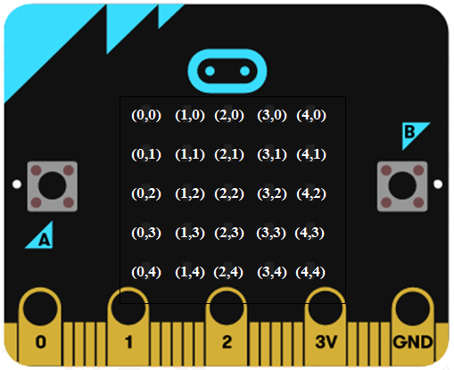
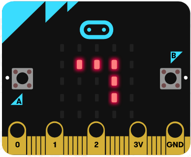
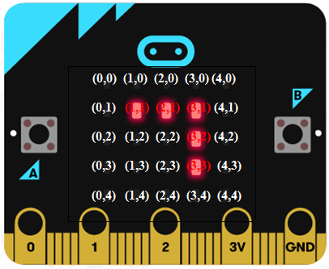
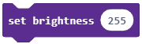
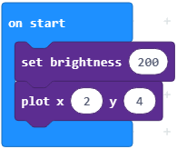

<!DOCTYPE html>
<html xmlns="http://www.w3.org/1999/xhtml" lang="en"></html>
  <head>
    <meta charset="utf-8" />
    <meta name="viewport" content="width=device-width, initial-scale=1.0" />
<title>Mësimi 6 –Kontrolli i diodave LED të ekranit &#8212; Petlja - Microbit_Al</title>
    <link rel="stylesheet" href="_static/pygments.css" type="text/css" />
    <link rel="stylesheet" href="_static/basic.css" type="text/css" />
    <link rel="stylesheet" type="text/css" href="_static/activecode.css" />
    <link rel="stylesheet" type="text/css" href="_static/codemirror.css" />
    <link rel="stylesheet" type="text/css" href="_static/clickable.css" />
    <link rel="stylesheet" type="text/css" href="_static/pytutor.css" />
    <link rel="stylesheet" type="text/css" href="_static/modal-basic.css" />
    <link rel="stylesheet" type="text/css" href="_static/datafile.css" />
    <link rel="stylesheet" type="text/css" href="_static/dragndrop.css" />
    <link rel="stylesheet" type="text/css" href="_static/fitb.css" />
    <link rel="stylesheet" type="text/css" href="_static/matrixeq.css" />
    <link rel="stylesheet" type="text/css" href="_static/parsons.css" />
    <link rel="stylesheet" type="text/css" href="_static/lib/prettify.css" />
    <link rel="stylesheet" type="text/css" href="_static/poll.css" />
    <link rel="stylesheet" type="text/css" href="_static/showEval.css" />
    <link rel="stylesheet" type="text/css" href="_static/tabbedstuff.css" />
    <link rel="stylesheet" type="text/css" href="https://stackpath.bootstrapcdn.com/bootstrap/4.2.1/css/bootstrap.min.css" />
    <link rel="stylesheet" type="text/css" href="_static/video.css" />
    <link rel="stylesheet" type="text/css" href="_static/webgldemo.css" />
    <link rel="stylesheet" type="text/css" href="_static/webglinteractive.css" />
    <link rel="stylesheet" type="text/css" href="_static/karel.css" />
    <link rel="stylesheet" type="text/css" href="_static/notes.css" />
    <link rel="stylesheet" type="text/css" href="_static/simanim.css" />
    <link rel="stylesheet" type="text/css" href="_static/pycode.css" />
    <link rel="stylesheet" type="text/css" href="_static/p5js.css" />
    <link rel="stylesheet" type="text/css" href="_static/gallery.css" />
    <link rel="stylesheet" type="text/css" href="https://stackpath.bootstrapcdn.com/bootstrap/4.2.1/css/bootstrap.min.css" />
    <link rel="stylesheet" type="text/css" href="_static/video.css" />
    <link rel="stylesheet" href="_static/user-highlights.css" type="text/css" />
    <link rel="stylesheet" href="https://use.fontawesome.com/releases/v5.1.1/css/all.css" type="text/css" />
    <link rel="stylesheet" href="_static/bootstrap-4.0.0-dist/css/bootstrap.min.css" type="text/css" />
    <link rel="stylesheet" href="_static/flatly.min.css" type="text/css" />
    <link rel="stylesheet" href="_static/petlja-runestone.css" type="text/css" />
    <script id="documentation_options" data-url_root="./" src="_static/documentation_options.js"></script>
    <script type="text/javascript" src="_static/runestonebase.js"></script>
    <script type="text/javascript" src="_static/jquery.js"></script>
    <script type="text/javascript" src="_static/underscore.js"></script>
    <script type="text/javascript" src="_static/doctools.js"></script>
    <script type="text/javascript" src="_static/language_data.js"></script>
    <script type="text/javascript" src="_static/jquery.highlight.js"></script>
    <script type="text/javascript" src="_static/bookfuncs.js"></script>
    <script type="text/javascript" src="_static/codemirror.js"></script>
    <script type="text/javascript" src="_static/xml.js"></script>
    <script type="text/javascript" src="_static/css.js"></script>
    <script type="text/javascript" src="_static/python.js"></script>
    <script type="text/javascript" src="_static/htmlmixed.js"></script>
    <script type="text/javascript" src="_static/javascript.js"></script>
    <script type="text/javascript" src="_static/jquery_i18n/CLDRPluralRuleParser.js"></script>
    <script type="text/javascript" src="_static/jquery_i18n/jquery.i18n.js"></script>
    <script type="text/javascript" src="_static/jquery_i18n/jquery.i18n.messagestore.js"></script>
    <script type="text/javascript" src="_static/jquery_i18n/jquery.i18n.fallbacks.js"></script>
    <script type="text/javascript" src="_static/jquery_i18n/jquery.i18n.language.js"></script>
    <script type="text/javascript" src="_static/jquery_i18n/jquery.i18n.parser.js"></script>
    <script type="text/javascript" src="_static/jquery_i18n/jquery.i18n.emitter.js"></script>
    <script type="text/javascript" src="_static/jquery_i18n/jquery.i18n.emitter.bidi.js"></script>
    <script type="text/javascript" src="_static/activecode-i18n.en.js"></script>
    <script type="text/javascript" src="_static/skulpt.min.js"></script>
    <script type="text/javascript" src="_static/skulpt-stdlib.js"></script>
    <script type="text/javascript" src="_static/activecode.js"></script>
    <script type="text/javascript" src="_static/clike.js"></script>
    <script type="text/javascript" src="_static/timed_activecode.js"></script>
    <script type="text/javascript" src="_static/animationbase.js"></script>
    <script type="text/javascript" src="_static/mchoice.js"></script>
    <script type="text/javascript" src="_static/timedmc.js"></script>
    <script type="text/javascript" src="_static/timed.js"></script>
    <script type="text/javascript" src="_static/mchoice-i18n.en.js"></script>
    <script type="text/javascript" src="_static/clickable.js"></script>
    <script type="text/javascript" src="_static/timedclickable.js"></script>
    <script type="text/javascript" src="_static/d3.v2.min.js"></script>
    <script type="text/javascript" src="_static/jquery.ba-bbq.min.js"></script>
    <script type="text/javascript" src="_static/jquery.jsPlumb-1.3.10-all-min.js"></script>
    <script type="text/javascript" src="_static/pytutor.js"></script>
    <script type="text/javascript" src="_static/codelens.js"></script>
    <script type="text/javascript" src="_static/datafile.js"></script>
    <script type="text/javascript" src="_static/dragndrop.js"></script>
    <script type="text/javascript" src="_static/timeddnd.js"></script>
    <script type="text/javascript" src="_static/dragndrop-i18n.en.js"></script>
    <script type="text/javascript" src="_static/fitb.js"></script>
    <script type="text/javascript" src="_static/timedfitb.js"></script>
    <script type="text/javascript" src="_static/fitb-i18n.en.js"></script>
    <script type="text/javascript" src="_static/matrixeq.js"></script>
    <script type="text/javascript" src="_static/lib/prettify.js"></script>
    <script type="text/javascript" src="_static/lib/hammer.min.js"></script>
    <script type="text/javascript" src="_static/parsons.js"></script>
    <script type="text/javascript" src="_static/parsons-i18n.en.js"></script>
    <script type="text/javascript" src="_static/timedparsons.js"></script>
    <script type="text/javascript" src="_static/poll.js"></script>
    <script type="text/javascript" src="_static/reveal.js"></script>
    <script type="text/javascript" src="_static/shortanswer.js"></script>
    <script type="text/javascript" src="_static/timed_shortanswer.js"></script>
    <script type="text/javascript" src="_static/showEval.js"></script>
    <script type="text/javascript" src="_static/tabbedstuff.js"></script>
    <script type="text/javascript" src="_static/runestonevideo.js"></script>
    <script type="text/javascript" src="_static/webglinteractive.js"></script>
    <script type="text/javascript" src="_static/FileSaver.min.js"></script>
    <script type="text/javascript" src="_static/Blob.js"></script>
    <script type="text/javascript" src="_static/karelCorner.js"></script>
    <script type="text/javascript" src="_static/karelRobot.js"></script>
    <script type="text/javascript" src="_static/karelWorld.js"></script>
    <script type="text/javascript" src="_static/karelRobotDrawer.js"></script>
    <script type="text/javascript" src="_static/karelUI.js"></script>
    <script type="text/javascript" src="_static/karel.js"></script>
    <script type="text/javascript" src="_static/karel-i18n.en.js"></script>
    <script type="text/javascript" src="_static/notes.js"></script>
    <script type="text/javascript" src="_static/pygamelib-init.js"></script>
    <script type="text/javascript" src="_static/blockly/blockly_compressed.js"></script>
    <script type="text/javascript" src="_static/blockly/blocks_compressed.js"></script>
    <script type="text/javascript" src="_static/blockly/python_compressed.js"></script>
    <script type="text/javascript" src="_static/blockly/msg-sr.js"></script>
    <script type="text/javascript" src="_static/blockpy/utilities.js"></script>
    <script type="text/javascript" src="_static/blockpy/python_errors.js"></script>
    <script type="text/javascript" src="_static/blockpy/ast_node_visitor.js"></script>
    <script type="text/javascript" src="_static/blockpy/abstract_interpreter.js"></script>
    <script type="text/javascript" src="_static/blockpy/pytifa.js"></script>
    <script type="text/javascript" src="_static/blockpy/abstract_interpreter_definitions.js"></script>
    <script type="text/javascript" src="_static/blockpy/python_to_blockly.js"></script>
    <script type="text/javascript" src="_static/blockpy/imported.js"></script>
    <script type="text/javascript" src="_static/blockpy/blocks/class.js"></script>
    <script type="text/javascript" src="_static/blockpy/blocks/comment.js"></script>
    <script type="text/javascript" src="_static/blockpy/blocks/comprehensions.js"></script>
    <script type="text/javascript" src="_static/blockpy/blocks/dict.js"></script>
    <script type="text/javascript" src="_static/blockpy/blocks/if.js"></script>
    <script type="text/javascript" src="_static/blockpy/blocks/io.js"></script>
    <script type="text/javascript" src="_static/blockpy/blocks/lists.js"></script>
    <script type="text/javascript" src="_static/blockpy/blocks/sets.js"></script>
    <script type="text/javascript" src="_static/blockpy/blocks/loops.js"></script>
    <script type="text/javascript" src="_static/blockpy/blocks/parking.js"></script>
    <script type="text/javascript" src="_static/blockpy/blocks/tuple.js"></script>
    <script type="text/javascript" src="_static/blockpy/blocks/turtles.js"></script>
    <script type="text/javascript" src="_static/blockpy/blocks/text.js"></script>
    <script type="text/javascript" src="_static/blockpy-modal.js"></script>
    <script type="text/javascript" src="_static/simanim.js"></script>
    <script type="text/javascript" src="https://cdn.jsdelivr.net/pyodide/v0.16.1/full/pyodide.js"></script>
    <script type="text/javascript" src="_static/pycode.js"></script>
    <script type="text/javascript" src="//toolness.github.io/p5.js-widget/p5-widget.js"></script>
    <script type="text/javascript" src="_static/p5js.js"></script>
    <script type="text/javascript" src="_static/gallery.js"></script>
    <script type="text/javascript" src="_static/petljavideo.js"></script>
    <script type="text/javascript" src="_static/mchoice-i18n.sr-Cyrl.js"></script>
    <script type="text/javascript" src="_static/mchoice-i18n.sr.js"></script>
    <script type="text/javascript" src="_static/mchoice-i18n.sr-Latn.js"></script>
    <script type="text/javascript" src="_static/dragndrop-i18n.sr-Cyrl.js"></script>
    <script type="text/javascript" src="_static/dragndrop-i18n.sr.js"></script>
    <script type="text/javascript" src="_static/dragndrop-i18n.sr-Latn.js"></script>
    <script type="text/javascript" src="_static/fitb-i18n.sr-Cyrl.js"></script>
    <script type="text/javascript" src="_static/fitb-i18n.sr.js"></script>
    <script type="text/javascript" src="_static/fitb-i18n.sr-Latn.js"></script>
    <script type="text/javascript" src="_static/parsons-i18n.sr-Cyrl.js"></script>
    <script type="text/javascript" src="_static/parsons-i18n.sr.js"></script>
    <script type="text/javascript" src="_static/parsons-i18n.sr-Latn.js"></script>
    <script type="text/javascript" src="_static/activecode-i18n.sr-Cyrl.js"></script>
    <script type="text/javascript" src="_static/activecode-i18n.sr.js"></script>
    <script type="text/javascript" src="_static/activecode-i18n.sr-Latn.js"></script>
    <script type="text/javascript" src="_static/jquery-ui-1.10.3.custom.min.js"></script>
    <script type="text/javascript" src="_static/jquery-fix.js"></script>
    <script type="text/javascript" src="_static/bootstrap-4.0.0-dist/js/bootstrap.min.js"></script>
    <script type="text/javascript" src="_static/bootstrap-4.0.0-dist/js/bootstrap.bundle.min.js"></script>
    <script type="text/javascript" src="_static/bootstrap-sphinx.js"></script>
    <script type="text/javascript" src="_static/waypoints.min.js"></script>
    <script type="text/javascript" src="_static/rangy-core.js"></script>
    <script type="text/javascript" src="_static/rangy-textrange.js"></script>
    <script type="text/javascript" src="_static/rangy-cssclassapplier.js"></script>
    <script type="text/javascript" src="_static/user-highlights.js"></script>
    <script type="text/javascript" src="_static/jquery.idle-timer.js"></script>
    <script type="text/javascript" src="_static/processing-1.4.1.min.js"></script>
    <script type="text/javascript" src="_static/jquery.hotkey.js"></script>
    <script type="text/javascript" src="_static/jquery-migrate-1.2.1.min.js"></script>
    <link rel="index" title="Index" href="genindex.html" />
    <link rel="search" title="Search" href="search.html" />
    <link rel="next" title="Час 7 - Одлучивање" href="Час 7 - Одлучивање.html" />
    <link rel="prev" title="Mësimi 5 –Leximi i të dhënave nga sensori" href="Час 5 - Читање података са сензора.html" />
<meta charset='utf-8'>
<meta http-equiv='X-UA-Compatible' content='IE=edge,chrome=1'>
<meta content='width=device-width, initial-scale=1.0, maximum-scale=1.0, user-scalable=0' name='viewport' />
<link rel="shortcut icon" href="_static/favicon.ico" type="image/ico" />

<script type="text/javascript">
  eBookConfig = {};
  eBookConfig.host = 'http://127.0.0.1:8000' ? 'http://127.0.0.1:8000' : 'http://127.0.0.1:8000';
  eBookConfig.app = eBookConfig.host + '/runestone';
  eBookConfig.ajaxURL = eBookConfig.app + '/ajax/';
  eBookConfig.course = 'Microbit_Al';
  eBookConfig.logLevel = '0';
  eBookConfig.loginRequired = 'false';
  eBookConfig.build_info = "";
  eBookConfig.isLoggedIn = false;
  eBookConfig.useRunestoneServices = 'false';
  eBookConfig.python3 = 'true';
  eBookConfig.basecourse = 'Microbit_Al';
  eBookConfig.runestone_version = '';
  eBookConfig.imagesDir = '_images/';
  eBookConfig.staticDir = '_static/';
  if(typeof(Sk) != "undefined")
      Sk.imgPath = eBookConfig.imagesDir;
</script>

<div id="fb-root"></div>


  </head><body>


<!-- Begin navbar -->

<nav id="navbar" class="navbar navbar-default navbar-fixed-top" role="navigation">

  <div class="container">

    <div class="navbar-header">
      <button type="button" class="navbar-toggle collapsed" data-toggle="collapse" data-target="#bs-example-navbar-collapse-1">
        <span class="sr-only">Toggle navigation</span>
        <span class="icon-bar"></span>
        <span class="icon-bar"></span>
        <span class="icon-bar"></span>
      </button>
      
    </div>

    <div class="collapse navbar-collapse" id="bs-example-navbar-collapse-1" style="margin-top: 10px; margin-left: 25px;">
      <ul class="nav navbar-nav">
        <li class="active"><a href="./">Petlja - Microbit_Al</a></li>
      </ul>
    </div>
  </div>
</nav>


<div class="container col-md-12" id="continue-reading"></div>

<div class="container col-md-8 col-md-offset-2" id="main-content" style="margin-top: 70px;">
  
  <div class="section" id="mesimi-6-kontrolli-i-diodave-led-te-ekranit">
<h1>Mësimi 6 –Kontrolli i diodave LED të ekranit<a class="headerlink" href="#mesimi-6-kontrolli-i-diodave-led-te-ekranit" title="Permalink to this headline">¶</a></h1>
<p>Në këtë mësim do të flasim për:­</p>
<ul class="simple">
<li><p>Sistemin koordinativ të Micro:bit-it;</p></li>
<li><p>Blloqet për kontrollin e diodave LED.</p></li>
</ul>
<p>Ekrani i pajisjes Micro:bit ka 25 dioda LED të kuqe të vendosura në rrjetin 5x5 (5 dioda në horizontale dhe 5 dioda në vertikale).</p>
<p>Sistemi koordinativ kartezian përdoret në matematikë për të përkufizuar pozitën e pikave në hapësirë. Në sistemin koordinativ kartezian, në rrafsh përkufizohen dy boshte: x dhe y.</p>
<p>Koordinatat (x,y) i përdorim për të përcaktuar renditjen e diodave LED në rrjetin e diodave LED, ku koordinata x paraqet pozitën horizontale (vlerat e së cilës janë 0,1,2,3,4) dhe koordinata y paraqet pozitën vertikale (0, 1, 2, 3, 4).</p>
<p>Për të kuptuar koordinatat x,y vendoseni Micro:bit-in në pozitë horizontale. Këto janë koordinatat x,y për diodat LED në rrjetin 5x5:</p>
<a class="reference internal image-reference" href="_images/105.png"></a>
<p>Me ndihmën e këtij rrjeti 5x5 të diodave LED mund të bëni gjëra të ndryshme. Secila diodë LED mund të ndizet dhe të fiket veç e veç. Kështu mund të “vizatoni” figura siç janë zemra ose buzëqeshja. Siç mund ta shohim në këtë rrjet 5x5 të diodave LED , fillimi koordinues (0,0) gjendet në këndin e majtë lart të rrjetit të diodave LED. Vlera e koordinatave x lëviz nga 0 deri 4 dhe rritet nga e majta në të djathtë, ndërsa vlera e koordinatës y lëviz nga 0 deri 4 dhe rritet nga lart-poshtë.</p>
<p>Le të krijojmë një program në të cilin do të përdorim blloqet për ndezje/fikje të diodave LED, me anë të cilit do të formohet figura e poshtme:</p>
<a class="reference internal image-reference" href="_images/106.png"></a>
<p><strong>Faza 1</strong></p>
<p><strong>Të menduarit e problemit:</strong> Për të formuar figurën e sipërme do të përdorim koordinatat (x,y) për të përcaktuar renditjen e diodave LED në rrjet. Koordinata x paraqet pozitën horizontale (me vlera 0,1,2,3,4) dhe koordinata y paraqet pozitën vertikale (0, 1, 2, 3, 4). Fillimisht, në fotografinë e sipërme përcaktojmë koordinatat e diodave LED të ndezura.</p>
<a class="reference internal image-reference" href="_images/107.png"></a>
<p>Në bazë të fotografisë mund të nxirrni përfundimin se janë të ndezura diodat LED në pozitën horizontale dhe ato janë në koordinatat (1,1), (2,1), (3,1), ndërsa diodat LED e ndezura në pozitën vertikale janë në koordinatat (3,1), (3,2) dhe (3,3).</p>
<p><strong>Faza 2</strong></p>
<p>Hapni MakeCode për t’i zgjedhur dhe renditur blloqet në hapësirën për programim.</p>
<p>Në faqen e internetit në <a class="reference external" href="https://makecode.microbit.org">https://makecode.microbit.org</a> filloni një projekt të ri duke klikuar në butonin <em>New Project</em> <a class="reference internal" href="_images/86.png"></a>.</p>
<p>Për të ndezur diodën LED duhet të përdorim bllokun <a class="reference internal" href="_images/108.png"></a> nga kategoria <a class="reference internal" href="_images/109.png"></a>.</p>
<p>Ja si duket kodi:</p>
<a class="reference internal image-reference" href="_images/110.png"></a>
<p><strong>Faza 3</strong></p>
<p>Testimi dhe analiza e programit.</p>
<p>Për ta testuar programin kemi dy mundësi:</p>
<blockquote>
<div><ol class="arabic simple">
<li><p>ta nisim në simulator duke klikuar butonin <a class="reference internal" href="_images/96.png"></a>.</p></li>
<li><p>ta kalojmë në Micro:bit. Për ta kaluar programin në Micro:bit duhet ta lidhim me kompjuter me kabllo USB. Pasi të klikoni butonin <a class="reference internal" href="_images/97.png"></a> shkarkoni skedarin .hex në kompjuterin tuaj. Duke e tërhequr skedarin në Micro:bit, pajisja është gati për të punuar.</p></li>
</ol>
</div></blockquote>
<p>Tani krijojmë programin me të cilin do të rregullojmë intensitetin e ndriçimit të diodave LED të ndezura. Duam të aktivizojmë diodën LED (2,4) intensiteti i ndriçimit i së cilës është vendosur në 200.</p>
<p><strong>Faza 1</strong></p>
<p><strong>Të menduarit e problemit:</strong> Koordinata x paraqet pozitën horizontale (me vlera 0,1,2,3,4) dhe koordinata y paraqet pozitën vertikale (0, 1, 2, 3, 4). Vlera e nivelit të ndriçimit ndryshon nga 0 (zi) deri në 255 (dritë).</p>
<p><strong>Faza 2</strong></p>
<p>Hapni MakeCode për t’i zgjedhur dhe renditur blloqet në hapësirën për programim. Në faqen e internetit në <a class="reference external" href="https://makecode.microbit.org">https://makecode.microbit.org</a> filloni një projekt të ri duke klikuar në butonin New Project <a class="reference internal" href="_images/86.png"></a>.</p>
<p>Për të përcaktuar nivelin e ndriçimit për diodat LED përdorim bllokun <a class="reference internal" href="_images/112.png"></a> nga kategoria <a class="reference internal" href="_images/109.png"></a>. А, да бисмо укључили лед диоду користимо блок <a class="reference internal" href="_images/108.png"></a> из исте категорије.</p>
<p>Si duket kodi:</p>
<a class="reference internal image-reference" href="_images/113.png"></a>
<p><strong>Faza 3</strong></p>
<p>Testimi dhe analiza e programit.</p>
<p>Për ta testuar programin kemi dy mundësi:</p>
<blockquote>
<div><p>1.ta nisim në simulator duke klikuar butonin <a class="reference internal" href="_images/96.png"></a>.</p>
<ol class="arabic simple" start="2">
<li><p>ta kalojmë në Micro:bit. Për ta kaluar programin në Micro:bit duhet ta lidhim me kompjuter me kabllo USB. Pasi të klikoni butonin <a class="reference internal" href="_images/97.png"></a> shkarkoni skedarin .hex në kompjuterin tuaj. Duke e tërhequr skedarin në Micro:bit, pajisja është gati për të punuar.</p></li>
</ol>
</div></blockquote>

    <div class="course-box course-box-info">
        <div class="course-content">
            <p>
<dl class="simple">
<dt><strong>Çfarë mësuam?</strong></dt><dd><ul class="simple">
<li><p>diodat LED janë të vendosura në rrjetin 5x5 në ekranin e Micro:bit-it.</p></li>
<li><p>secila diodë LED ka pozitën e vet në ekranin e Micro:bit-it, të përcaktuar me koordinatën x (horizontale) dhe koordinatën y (vertikale).</p></li>
<li><p>si të ndezim dhe të fikim diodat LED dhe si të ndryshojmë gjendjen e diodave individuale nga gjendja ndezur në gjendjen fikur.</p></li>
<li><p>si të kontrollojmë gjendjen momentale të diodave LED, përkatësisht nëse janë të ndezura apo të fikura.</p></li>
<li><p>si të përdorim bllokun me të cilin përcaktojmë nivelin e ndriçimit të diodave LED.</p></li>
</ul>
</dd>
</dl>

    </p></div></div>
<div class="section" id="test">
<h2>Test¶<a class="headerlink" href="#test" title="Permalink to this headline">¶</a></h2>
<div class="system-message">
<p class="system-message-title">System Message: WARNING/2 (<span class="docutils literal">F:\petlja\bc\albanci priručnik\Microbit_Al\_sources\Час 6 - Контрола лед диода екрана.rst</span>, line 122)</p>
<p>Title underline too short.</p>
<div class="highlight-default notranslate"><div class="highlight"><pre><span></span>Test¶
~~~~
</pre></div>
</div>
</div>
<div class="system-message">
<p class="system-message-title">System Message: ERROR/3 (<span class="docutils literal">F:\petlja\bc\albanci priručnik\Microbit_Al\_sources\Час 6 - Контрола лед диода екрана.rst</span>, line 124)</p>
<p>Error in “mchoice” directive:
invalid option block.</p>
<div class="highlight-default notranslate"><div class="highlight"><pre><span></span>.. mchoice:: L6P1
    :answer_a: (1,1)
    :answer_b: (0,1)
    :answer_c: (0,0)
    :answer_d: (1,0)
    :feedback_a: Përgjigja juaj nuk është e saktë. Provoni përsëri!Përgjigja juaj nuk është e saktë. Provoni përsëri!
    :feedback_b: Përgjigja juaj nuk është e saktë. Provoni përsëri!Përgjigja juaj nuk është e saktë. Provoni përsëri!
    :feedback_c:Ju lumtë! Përgjigja juaj është e saktë.
    :feedback_d: Përgjigja juaj nuk është e saktë. Provoni përsëri!Përgjigja juaj nuk është e saktë. Provoni përsëri!
    :correct: c

    Cila është pozita (koordinatat) e diodës LED lart majtas në ekranin e Micro:bit-it? Zgjidhni përgjigjen e saktë.

</pre></div>
</div>
</div>
<div class="system-message">
<p class="system-message-title">System Message: ERROR/3 (<span class="docutils literal">F:\petlja\bc\albanci priručnik\Microbit_Al\_sources\Час 6 - Контрола лед диода екрана.rst</span>, line 138)</p>
<p>Error in “mchoice” directive:
invalid option block.</p>
<div class="highlight-default notranslate"><div class="highlight"><pre><span></span>.. mchoice:: L6P2
    :answer_a: (3,3)
    :answer_b: (4,4)
    :answer_c: (0,0)
    :answer_d: (1,1)
    :feedback_a: Përgjigja juaj nuk është e saktë. Provoni përsëri!Përgjigja juaj nuk është e saktë. Provoni përsëri!
    :feedback_b:Ju lumtë! Përgjigja juaj është e saktë.
    :feedback_c: Përgjigja juaj nuk është e saktë. Provoni përsëri!Përgjigja juaj nuk është e saktë. Provoni përsëri!
    :feedback_d: Përgjigja juaj nuk është e saktë. Provoni përsëri!Përgjigja juaj nuk është e saktë. Provoni përsëri!
    :correct: b

    Cila është pozita (koordinatat) e diodës LED poshtë djathtas në ekranin e Micro:bit-it? Zgjidhni përgjigjen e saktë.

</pre></div>
</div>
</div>
<div class="system-message">
<p class="system-message-title">System Message: ERROR/3 (<span class="docutils literal">F:\petlja\bc\albanci priručnik\Microbit_Al\_sources\Час 6 - Контрола лед диода екрана.rst</span>, line 152)</p>
<p>Error in “mchoice” directive:
invalid option block.</p>
<div class="highlight-default notranslate"><div class="highlight"><pre><span></span>.. mchoice:: L6P3
    :answer_a: (3,2)
    :answer_b: (2,3)
    :answer_c: (2,4)
    :answer_d: (4,2)
    :feedback_a: Përgjigja juaj nuk është e saktë. Provoni përsëri!Përgjigja juaj nuk është e saktë. Provoni përsëri!
    :feedback_b:Ju lumtë! Përgjigja juaj është e saktë.
    :feedback_c: Përgjigja juaj nuk është e saktë. Provoni përsëri!Përgjigja juaj nuk është e saktë. Provoni përsëri!
    :feedback_d: Përgjigja juaj nuk është e saktë. Provoni përsëri!Përgjigja juaj nuk është e saktë. Provoni përsëri!
    :correct: b

    Cila është pozita (koordinatat) e diodës LED së ndezur në ekranin e Micro:bit-it të paraqitur në fotografinë poshtë?

    .. image:: ../_images/114.png
         :align: center
         :width: 300px

    Zgjidhni përgjigjen e saktë.

</pre></div>
</div>
</div>
<div class="system-message">
<p class="system-message-title">System Message: ERROR/3 (<span class="docutils literal">F:\petlja\bc\albanci priručnik\Microbit_Al\_sources\Час 6 - Контрола лед диода екрана.rst</span>, line 172)</p>
<p>Error in “mchoice” directive:
invalid option block.</p>
<div class="highlight-default notranslate"><div class="highlight"><pre><span></span>.. mchoice:: L6P4
    :answer_a: Diodat LED në (3,2) dhe (1,4) të ndezura.
    :answer_b: Diodat LED në (3,2) dhe (1,4) të fikura.
    :answer_c: Diodat LED në (3,2) dhe (4,1) të ndezura.
    :answer_d: Nuk do të paraqitet asgjë.
    :feedback_a:Ju lumtë! Përgjigja juaj është e saktë.
    :feedback_b: Përgjigja juaj nuk është e saktë. Provoni përsëri!Përgjigja juaj nuk është e saktë. Provoni përsëri!
    :feedback_c: Përgjigja juaj nuk është e saktë. Provoni përsëri!Përgjigja juaj nuk është e saktë. Provoni përsëri!
    :feedback_d: Përgjigja juaj nuk është e saktë. Provoni përsëri!Përgjigja juaj nuk është e saktë. Provoni përsëri!
    :correct: а

    Studioni kodin me kujdes:

    .. image:: ../_images/115.png
         :align: center
         :width: 200px

    Çfarë do të paraqitet në ekranin e Micro:bit-it? Zgjidhni përgjigjen e saktë.
</pre></div>
</div>
</div>
</div>
</div>


  
      <div class="col-md-12">
<ul class="pager">
        <li id="relations-prev" title='Previous chapter - Mësimi 5 –Leximi i të dhënave nga sensori' data-toggle="tooltip"><a href="Час 5 - Читање података са сензора.html">Kapitulli i mëparshëm</a></li>
    
        <li id="relations-next" title='Next chapter - Час 7 - Одлучивање' data-toggle="tooltip"><a href="Час 7 - Одлучивање.html">Kapitulli tjetër</a></li>
</ul>

<!-- <ul class="pager"> -->
    <!-- -->
        <!-- <li id="relations-prev" title='Претходно поглавље - Mësimi 5 –Leximi i të dhënave nga sensori' data-toggle="tooltip"><a href="Час 5 - Читање података са сензора.html">Претходно поглавље</a></li> -->
    <!--  -->
    <!-- -->
        <!-- <li id="relations-next" title='Следеће поглавље - Час 7 - Одлучивање' data-toggle="tooltip"><a href="Час 7 - Одлучивање.html">Следеће поглавље</a></li> -->
    <!-- -->
<!-- </ul> -->

<script type="text/javascript">

  $('#relations-prev').tooltip({'placement':'right', 'selector': '', 'delay': { show: 100, hide: 50}});
  $('#relations-next').tooltip({'placement':'left', 'selector': '', 'delay': { show: 100, hide: 50}});

</script>
</div>
  
</div>
<footer class="footer col-md-12">
    <div class="container">
        <div class="text-center">
            <hr>
            <p class="text-muted">
                <span class="pull-left">&copy; 2021 British Council (Created using  <a href="https://pypi.org/project/Sphinx/">Swinx</a>, <a href="http://runestoneinteractive.org/">RunestoneComponents</a> and <a href="https://github.com/Petlja/PetljaDoc">PetljaDoc</a>)</span>
            </p>
        </div>
    </div>
</footer>


<script type="text/javascript">
  var _gaq = _gaq || [];
  _gaq.push(['_setAccount', 'UA-32029811-1']);
  _gaq.push(['_trackPageview']);

  (function() {
    var ga = document.createElement('script'); ga.type = 'text/javascript'; ga.async = true;
    ga.src = ('https:' == document.location.protocol ? 'https://ssl' : 'http://www') + '.google-analytics.com/ga.js';
    var s = document.getElementsByTagName('script')[0]; s.parentNode.insertBefore(ga, s);
  })();
</script>


  </body>
</html>